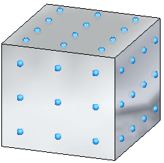
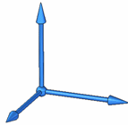
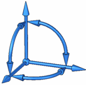
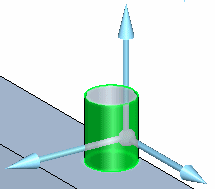
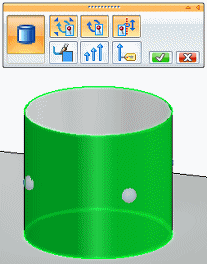
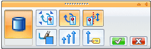
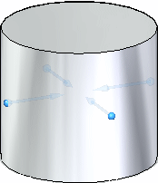
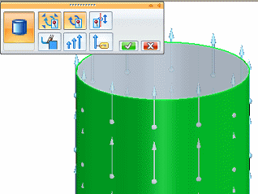
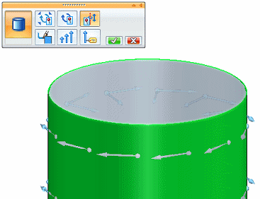
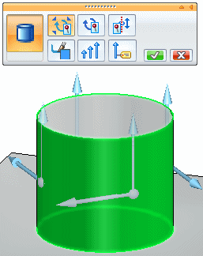

Constraint symbols
Understanding constraint symbol DOF indicators
Constraint symbols indicate the degrees of freedom (DOF) of a model. The symbols are comprised of two shapes: a sphere and one or more arrows.
-
The sphere indicates no degrees of freedom. It is used by fixed and pinned constraints. It also appears in sliding-along-surface constraints, cylindrical constraints, and no rotation constraints.
-
Arrow symbols point in the direction the model is not constrained, with each arrow indicating one DOF.
Constraint symbol examples
|
Constraint symbol |
Indicates |
Example |
|
|
Constrains all six DOF: three translational and three rotational. |
 |
|
|
Constrains all three translational DOF, yet allows three rotational DOF. |
|
|
|
Prevents rotation, yet allows three translational DOF. |
|
|
Sliding Along Surface constraint
|
Constrains only the direction normal to the surface. |
Note:
If the Include Rotational DOF option also is selected, the rotational degrees of freedom around the two axes that result in rotations out of the surface also are constrained. |
|
User-defined constraint (solid part)  |
Allows translation in 1, 2, or 3 directions. |
Specify the DOF to remove by clicking a direction arrow on the triad. To remove one translational DOF on a solid:
|
|
User-defined constraint (thin-body part)  |
On a thin-body part, allows:
|
To remove two rotational DOF on a thin-body:
|
|
 |
The option buttons on the Constraints command bar add and remove DOF arrows. |
The following examples are valid for a solid model with a tetrahedral mesh. |
|
Fully constrained. |
 |
|
|
Only radial growth is allowed. |
  |
|
|
Constrains radial growth and rotation. Allows sliding along axis. |
 |
|
|
Allows radial growth and rotation. Constrains sliding along axis. |
 |
|
|
Constrains radial growth. Allows rotation around axis and sliding along axis. |
 |


Constraint symbol options
-
All constraint symbols share the same color. The global color is governed by the setting on the Simulation page of the Solid Edge Options dialog. The initial RGB color definition is: (64,160,255).
You can override the default symbol color using the Color button on the Constraints command bar.
To learn how, see Modify symbol color.
-
You can change the initial size and spacing of constraint symbols using the Symbol Size button on the Constraints command bar.
To learn how, see Modify symbol size and spacing.
How do I
Define a constraintActivity: Apply a fixed constraint
Activity: Apply pinned and no rotation constraints
Activity: Apply a sliding along surface constraint
Activity: Apply a user defined constraint
Edit a constraint
Learn more
Creating and using constraintsConstraints
Constraint labels